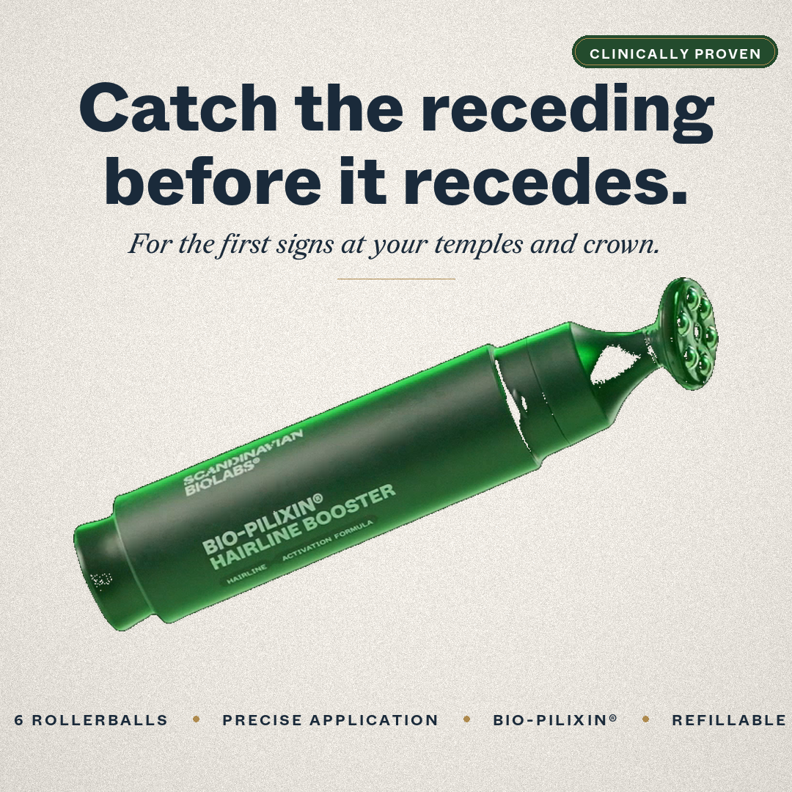
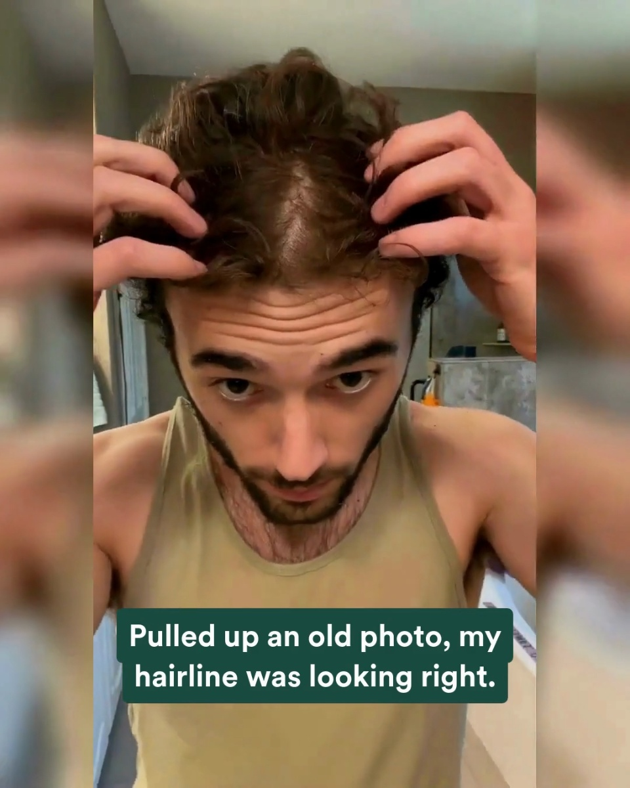
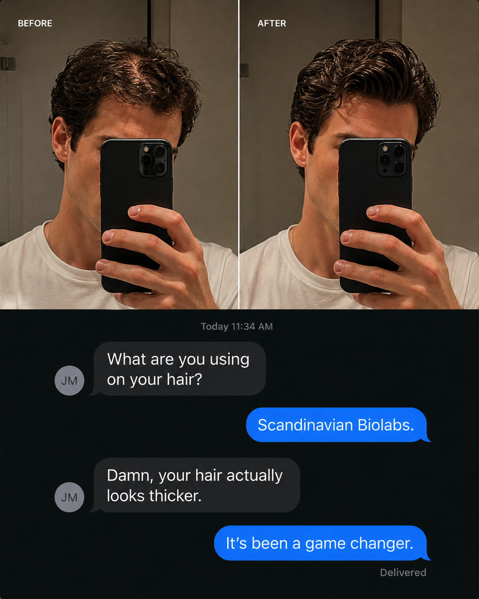
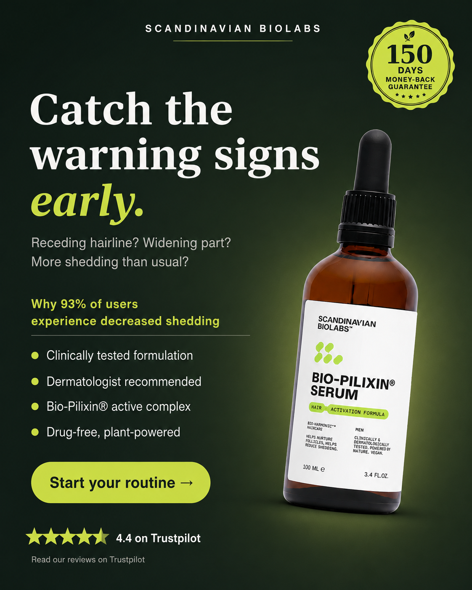

Creative audit · prepared for Scandinavian Biolabs
I pulled 155 of your live ads from your public Meta Ad Library and mapped them: every angle, audience, and awareness level in that batch. Here is what is working, where you are crowded, and the one gap with the highest odds of paying off.
Your diversity score is how widely the account spreads across audiences, awareness stages, angles, and formats. Your strongest area is format variety. Where you lose the most is coverage (how many audience-by-awareness boxes have an ad).
The one finding that matters
Across the 155 ads I pulled, not one speaks to an unaware buyer, someone who does not yet know they have the problem. Your Unaware stage is completely empty.
What is already working
I can’t see inside your ad account, so I rank winners the only honest way from the outside: how long an ad has stayed live. The longer it runs, the more likely it is paying. Here are all 4, longest-running first, broken down the four dials I mix to build ads: Concept, Angle, Style, Hook (CASH), plus the avatar and awareness stage each one hits.
| Concept | Angle | Style | Hook | Hook type | Avatar | Awareness | Run | ||
|---|---|---|---|---|---|---|---|---|---|
 | Hairline booster pen, 6-rollerball, clinically proven | Mechanism Led | Static · Product shot | “Hairline Booster. Six rollerballs. One precision pen. Engineered to massage as it applies.” | Bold Claim | Men (thinning / receding hairline) | Solution-aware | 39d | Ad ↗ |
 | He spots thinning in old photos, starts the serum | Problem Led | Video · Problem to solution video | “Pulled up an old photo, my hairline was looking right.” | Relatability | Men (thinning / receding hairline) | Problem-aware | 35d | Ad ↗ |
 | Before/after selfie plus a 'what are you using?' text | Social Proof Led | Static · Native UGC screenshot | “BEFORE / AFTER + iMessage: What are you using on your hair? Scandinavian Biolabs.” | Before After | Men (thinning / receding hairline) | Solution-aware | 35d | Ad ↗ |
 | Ali's 5-star review over a bathroom serum shot | Social Proof Led | Static · Testimonial image | “"Has genuinely made my hair thicker and stronger..." - Ali (GB) 5 stars” | Authority Reaction | Men (thinning / receding hairline) | Solution-aware | 35d | Ad ↗ |
Your account, mapped
Avatars down the side, awareness stages across the top. Every ad you run lands in one box. The goal is simple: fill the gaps.
| Avatar | Unaware | Problem-aware | Solution-aware | Product-aware | Most-aware |
|---|---|---|---|---|---|
| Men (thinning / receding hairline) | 25 | 24 | 9 | ||
| General female thinning (widening part / ponytail) | 15 | 17 | 12 | ||
| Women 40+ / hormonal & menopause thinning | 1 | 3 | |||
| GLP-1 / weight-loss shedding | 1 | ||||
| Broad / unsegmented (routine, offer, science) | 4 | 16 | 27 | 1 |
You cover 13 of 25 boxes, and your busiest lane holds 17.4% of your ads. That is healthy spread. Now look at the left column: the entire Unaware stage is empty.
By the numbers
Straight from the ads, no interpretation. This is the objective shape of what you run.
Your current mechanism
22 of 155 ads name a cause, and the most-used covers just 5.
The unique fix your ads repeat.
You repeat one fix well, but the cause you name is scattered: your most-used reason shows up in only 5 ads. No single villain sticks in the market’s head. Lock onto one clear cause and own it the way you already own the fix. That is usually the fastest lever in an account.
Where the traffic goes
Ranked by how many ads point to each and how long they run. It shows what you trust, and what you have not tried yet.
You send most traffic to landing pages, product pages. I do not see any advertorials in the mix, worth a look, not a prescription.
The gap I would attack first
Everything you run assumes the viewer already feels the problem. Nothing catches men earlier, while they still do not know they have it. That unaware audience is far larger than the warm one you target now, and it is where the cheap scale lives. The move: a story-led video or a native-style image ad, the kind that does not look like an ad, built for men. You have already proven this audience buys, so it is a low-risk way into the one stage you are not running.
I found 12 gaps in total, all ranked by odds. This is number one. I’d love to show you the other 11 and build the first ad to fill this one.
Your biggest next play is story-led unaware ads for men. It is a high-odds move for a simple reason: you have already proven this audience buys. That play, plus tightening every ad onto a single clear message, are the two biggest levers you are not pulling yet. Reply to my email and I will build the first one in less than 24 hours.
Fix the gap in 24 hoursHow to read this: this is built entirely from your public Meta Ad Library, what is running and for how long, never your private cost, click or revenue numbers. "Working" means an ad is long-running or heavily scaled, which is a strong free signal, not confirmed profit. Treat the plays above as where I would test, not gospel.
Prepared by Ben Lomon · July 2026